| 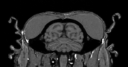 |
Visualiser un volume |

|
| 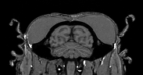 |
Visualiser un volume |
|
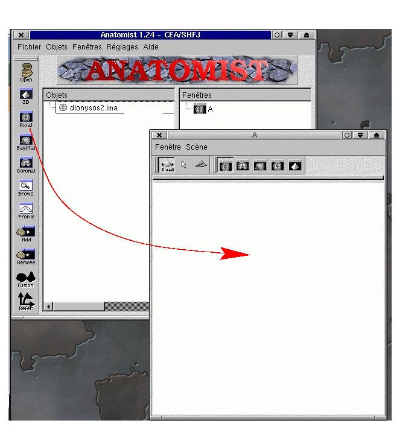
Vous pouvez mettre le volume dans une fenêtre ou un groupe de fenêtres de votre choix en utilisant le bouton "Add" qui agit sur le volume et les fenêtres sélectionnés (Control-clic permet de sélectionner plusieurs fenêtres, Shift-clic une suite de fenêtres...). Vous pouvez également utiliser le "drag & drop" pour "prendre" des objets et les "poser" sur une fenêtre, ou sur une liste de fenêtres sélectionnées dans la fenêtre de contrôle:
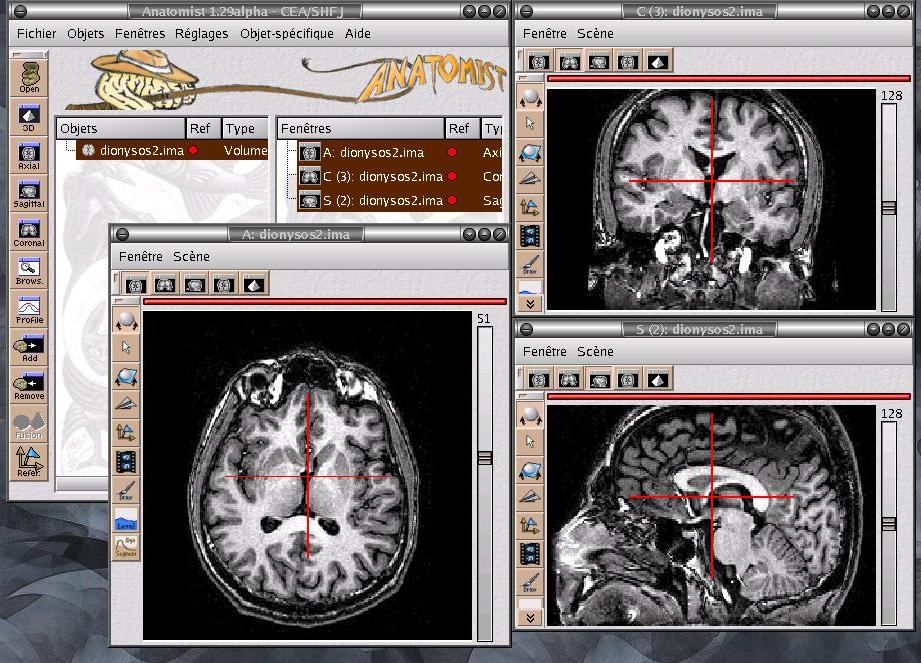
NB: La seule convention actuellement utilisée dans anatomist
est la convention radiologique (la gauche est à droite et vice-versa).
Des versions ultérieures devraient permettre d'autres points de
vue...
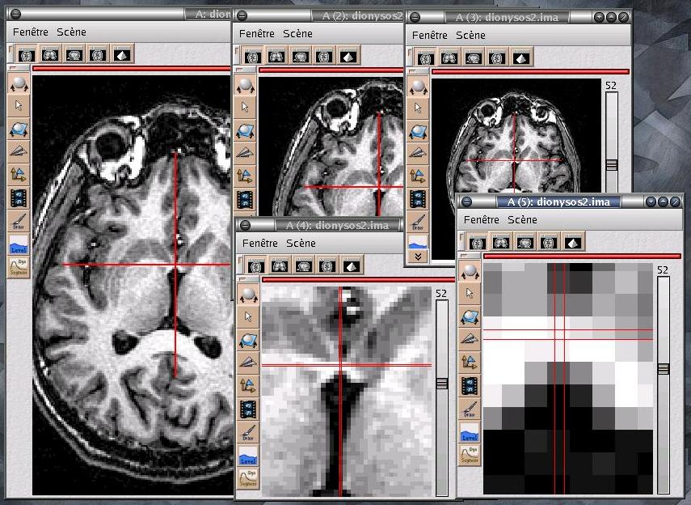
Affichage: dionysos2.ima : (126 ,121 ,52) -> ( 60 )
NB: cette fonctionalité est bien évidemment transitoire
et ne présage en rien des moyens futurs d'accéder à
ce type d'information (volumes d'intérêts, histogrammes...)
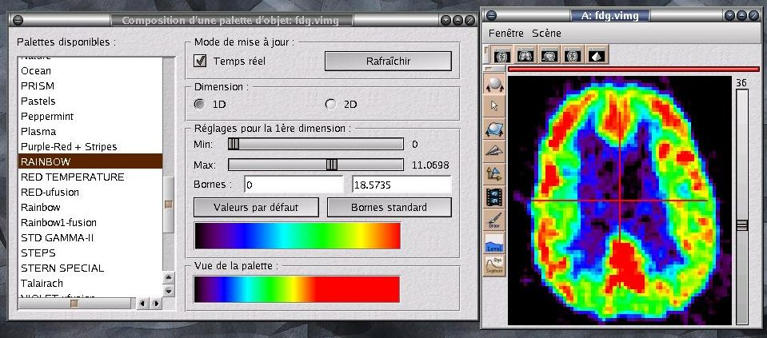
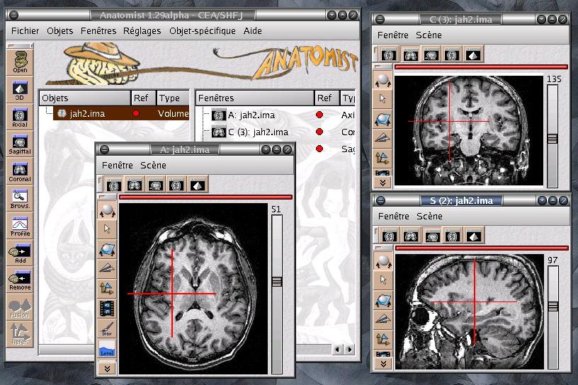
Il est possible de constituer plusieurs groupes de fenêtres dotés
chacun d'un curseur lié indépendant. On crée un nouveau
groupe de fenêtres en utilisant le menu "Fenêtre / lier les fenêtres" qui agit sur les fenêtres sélectionnées (grisées).
Les fenêtres qui n'appartiennent à aucun groupe explicite
sont liées entre elles
(elles appartiennent implicitement au groupe par défaut):
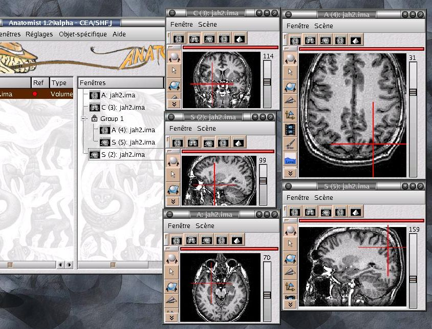
On pouvait modifier l'apparence du curseur lié ou le faire disparaitre grâce au menu "Réglages / Préférences", mais, hem..., cette fonctionnalité a disparu et n'a jamais été reprogrammée... mais elle reviendra un jour.
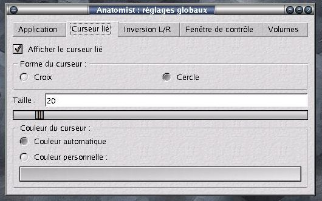
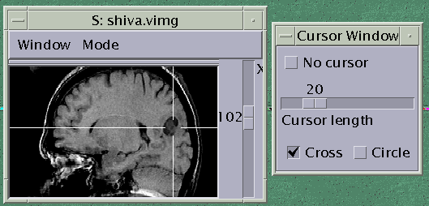
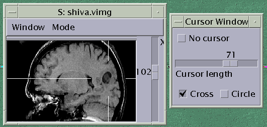
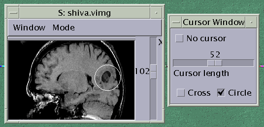
|
|